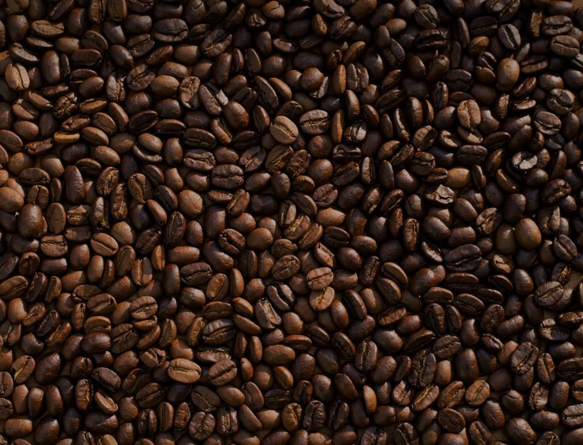
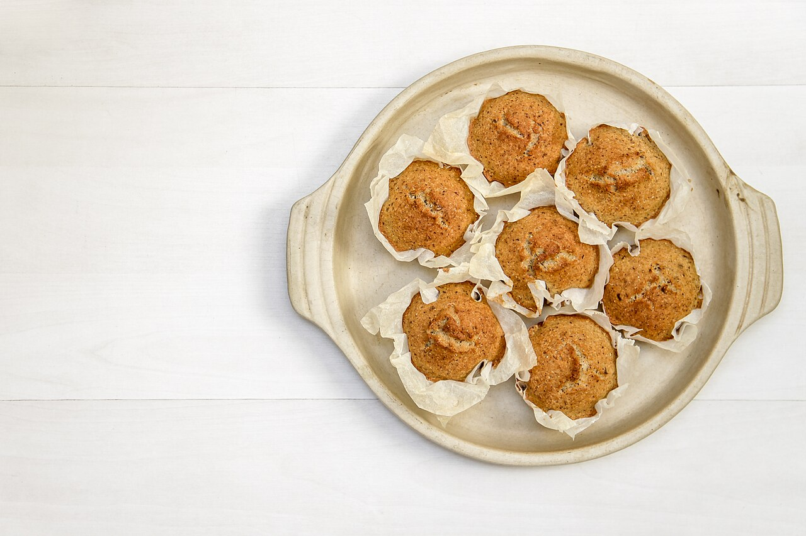
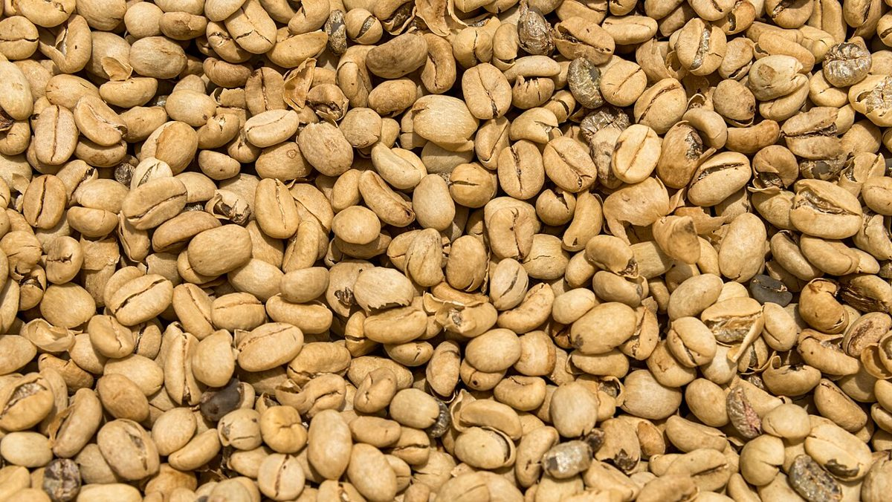

ブレンド価格 準備中
産地の違う豆を組み合わせた、お店が力を入れる一杯。
ABOUT
※ 地域メディアの紹介記事で確認できた内容です。最新の状況はInstagramでご確認ください。





MENU
紹介記事などで確認できたメニューの一部です。価格・提供状況は変わることがあるため、準備中としています。
産地の違う豆を組み合わせた、お店が力を入れる一杯。

生豆の香り・苦味・深み・酸味の個性を楽しむ一杯。

浅煎りのコーヒーをミルクと合わせたラテ。

抹茶とコーヒーの組み合わせ(スイート/ノンスイート)。

完熟バナナにクルミやチョコチップ。コーヒーのおやつ。

自家焙煎の豆をお持ち帰りできます。
VOICE
以下は制作側が作成したイメージ例であり、実在のお客様の声ではありません。
ブラックが苦手でしたが、ここのブレンドなら最後まで飲めました。冷めてもおいしいです。
元ガソリンスタンドの建物が目を引きます。焙煎機を眺めながら待つ時間も楽しいです。
豆を買って帰り、家でもゆっくり楽しみました。おやつのバナナブレッドも合います。
写真はフリー素材のイメージです。実際の店舗・商品の写真ではありません。
写真クレジット(縮小・切り抜きなどの加工あり)
ライセンスの詳細は creativecommons.org をご覧ください。